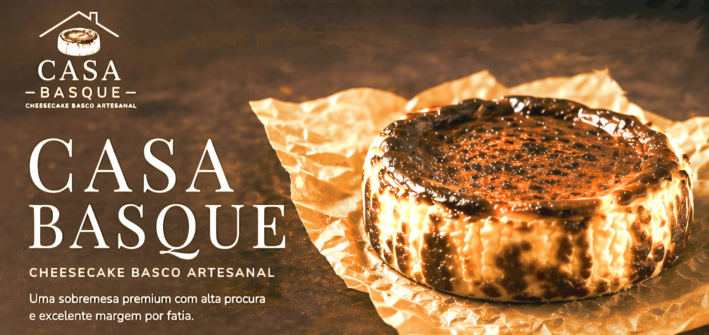
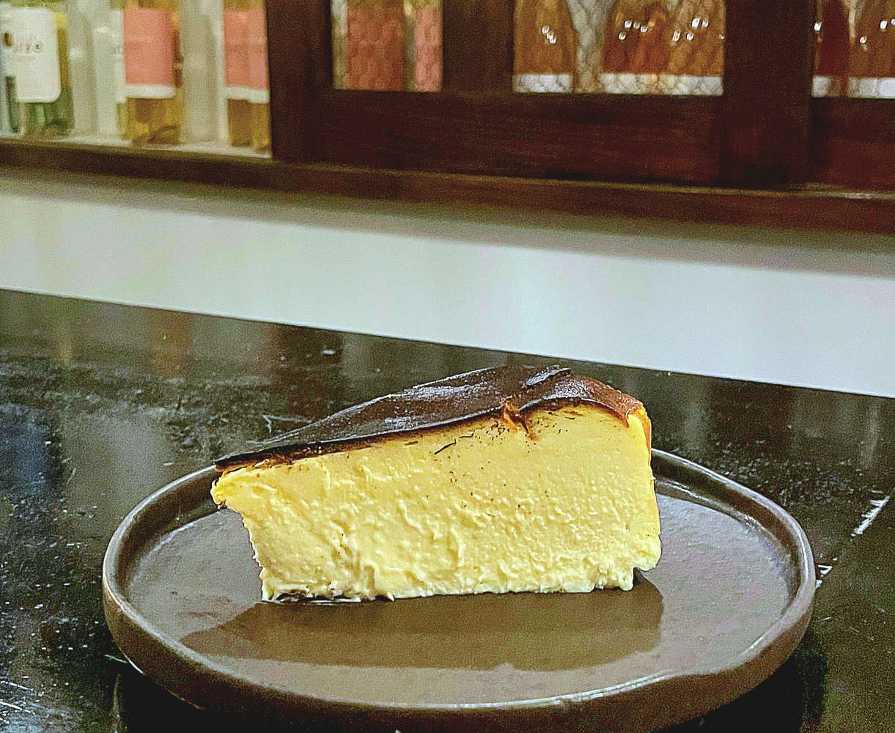
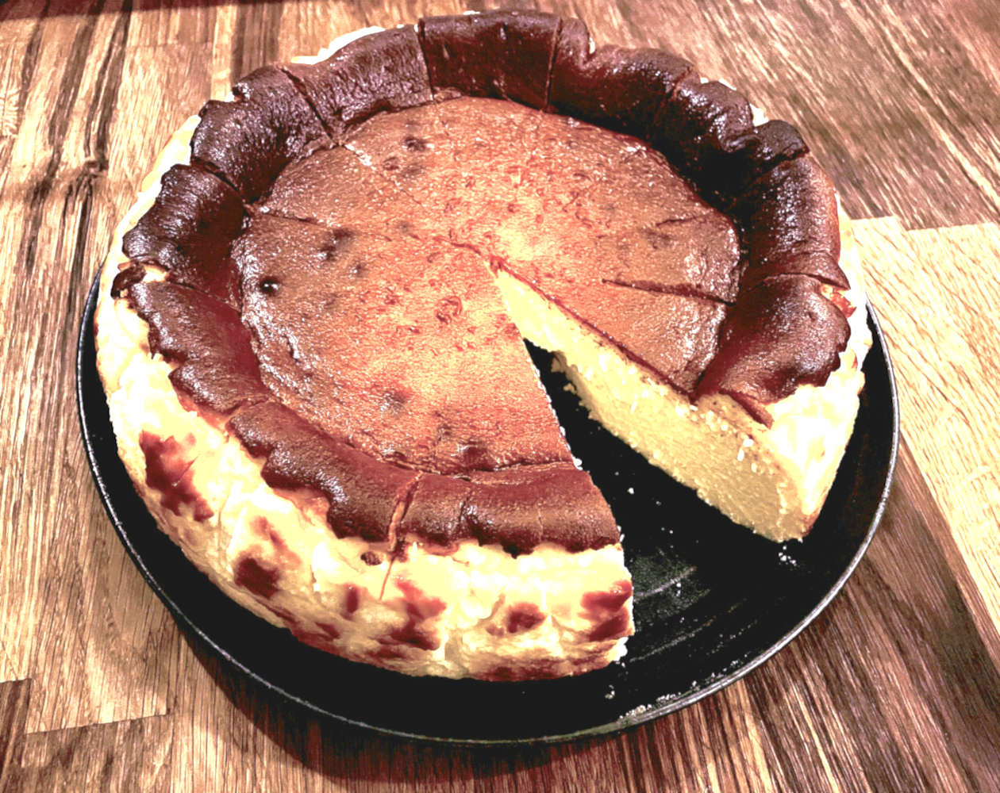
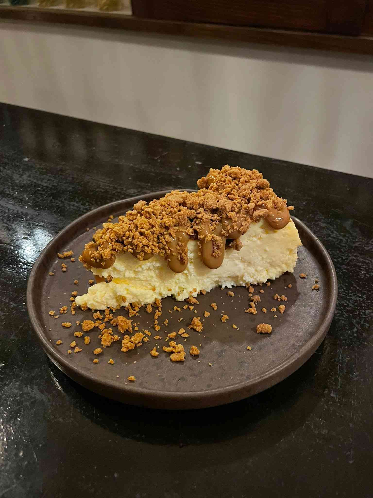

Cremoso por dentro, caramelizado por fora. Uma experiência irresistível.

Inspirado na tradição espanhola, o nosso cheesecake basco, tarta de queso, é preparado com uma receita de familia, criada em 2005, com ingredientes selecionados e um processo artesanal que garante sabor intenso e textura irresistível.
Exterior caramelizado com interior ultra cremoso.
Derrete na boca a cada colherada.
Selecionados para garantir qualidade superior.



Produção limitada — encomenda antes que esgote